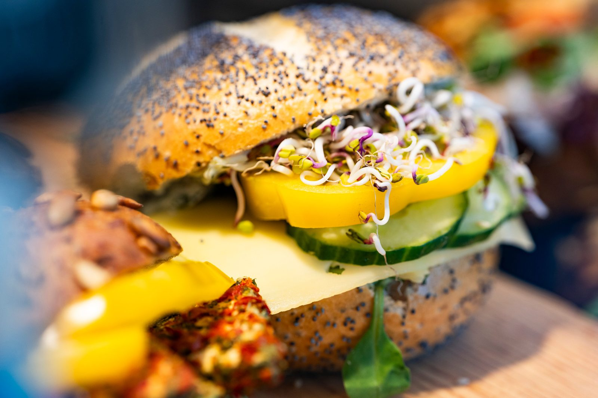

Handgefertigt in der Backstube
Von Serranoschinken bis Räucherlachs: Unsere Canapés entstehen auf kräftigem Roggenvollkorn- oder saftigem Weizenbrot, verfeinert mit feinen Cremes, frischem Feldsalat oder Rucola und dekorativem Obst. Ideal für Buffets, Feiern und Firmenevents in Rostock.
Unsere Sorten
Ein Klick führt direkt zur Anfrage — wir stellen die Auswahl gern individuell für dich zusammen.
Canapés bestellen